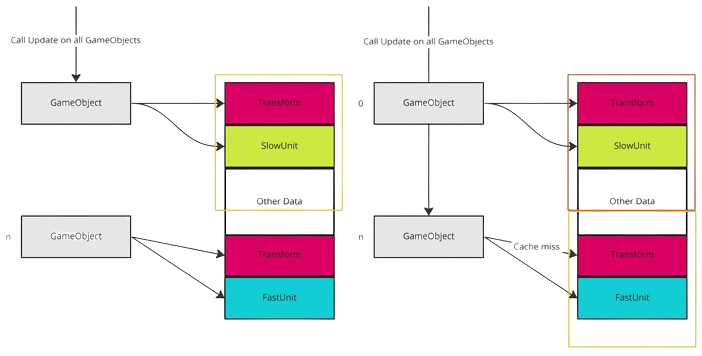

Data-oriented Design (DOD) is an approach to software design that focuses on organizing data in a way that optimizes performance and efficiency. Unlike traditional object-oriented design, which emphasizes modeling the behavior of software systems through classes and hierarchies, DOD prioritizes the efficient storage, retrieval, and manipulation of data.
One of the key principles of DOD is to design data structures and algorithms that are tailored to the specific requirements of the application and the underlying hardware architecture. By understanding the access patterns and processing needs of the data, developers can design systems that maximize cache coherence, minimize memory access latency, and exploit parallelism to achieve optimal performance.
Another aspect of DOD is the separation of data from behavior. Instead of bundling data and operations into tightly coupled objects, DOD advocates for a more modular approach where data is organized into contiguous arrays or structures, and operations are performed in a data-driven manner, often using parallel processing techniques.
By embracing Data-oriented Design, developers can achieve significant performance improvements, especially in applications that are computationally intensive or memory-bound. DOD enables developers to leverage the full capabilities of modern hardware architectures, such as multi-core processors and SIMD instructions, to efficiently process large volumes of data in real-time.
In conclusion, Data-oriented Design offers a pragmatic and performance-oriented approach to software design, focusing on optimizing data layout and processing to achieve superior performance and scalability. By adopting DOD principles, developers can build systems that are not only faster and more efficient but also more resilient and adaptable to evolving requirements and hardware platforms.